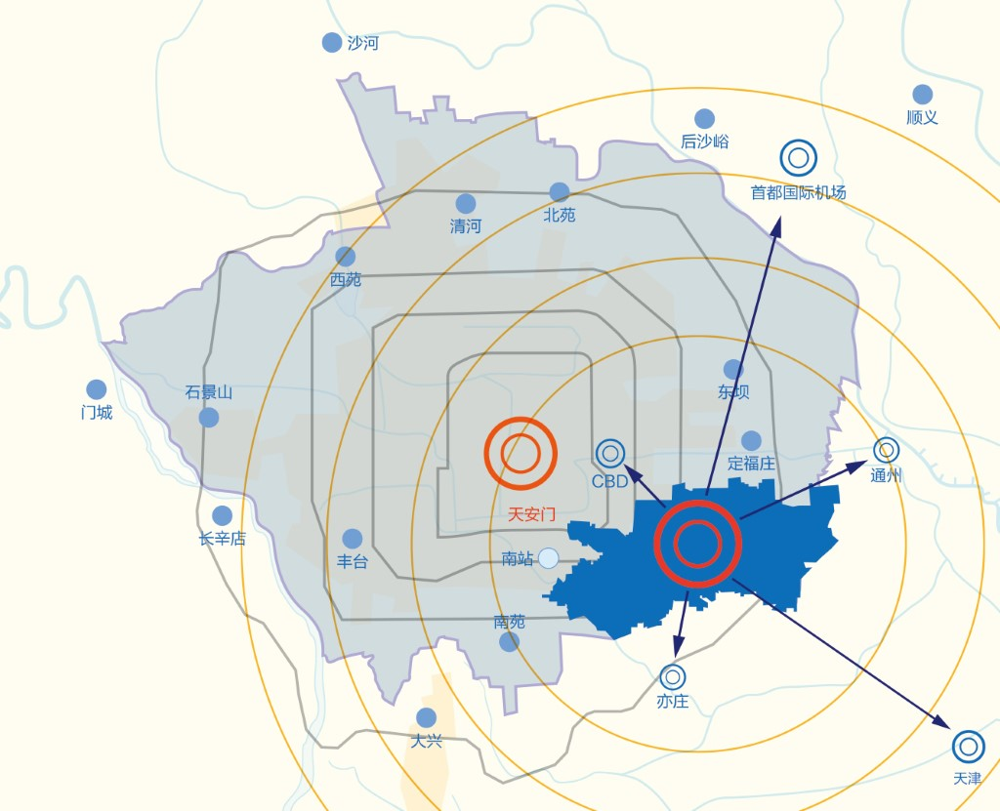
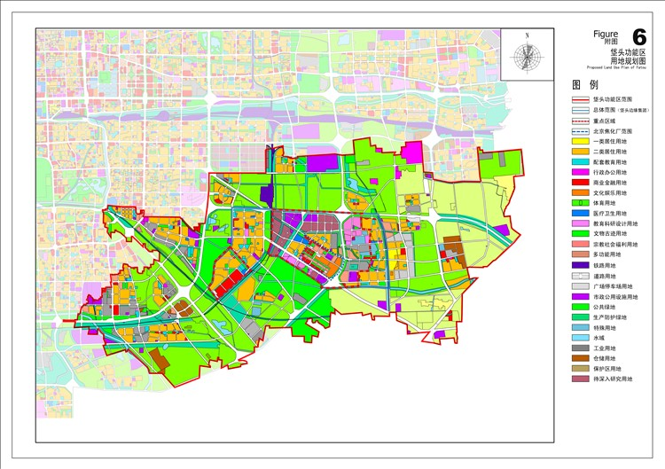

我们致力于为北京垡头地区生活和工作的居民提供生活信息、邻里互动、参与各种文化体育活动、进行物品交易等综合服务为一体的网络生活平台。
区位现状

北京垡头科技商务区位于北京市中心城东南部，CBD、亦庄开发区和通州新城之间，是朝阳区“十二五”时期规划建设的十大发展基地之一，规划面积15.6平方公里。东至通惠灌渠西路，西至垡头西路，南至大羊坊路、孔家井北路，北至京哈高速路。
规划中垡头区域包含：小红门、十八里店、南磨房、王四营、豆各庄、黑庄户和垡头街道。基础概况

本区域是北京著名的老工业基地，聚集了焦化厂等一批国有大型化工企业，现大多已停产搬迁，焦化厂已被规划为工业旧址公园，目前建成有北京欢乐谷、酷车小镇、燕莎奥特莱斯、富力又一城等项目。
功能定位
北京垡头科技商务区将重点培育和发展商务服务与科技成果转化相融合的科技金融、科技中介、技术交易等科技商务服务产业集群，打造以新兴创新总部集聚、科技商务服务、应用创新示范、创意展示体验为核心功能的科技商务创新中心，成为首都商务中心区创新发展新载体，首都传统工业基地转型升级新范例、首都城乡结合部人口资源环境与产业协调发展新标杆、首都东南门户形象区和首都经济圈的重要节点。
发展之域 时刻领先
随着北京垡头科技商务区开发建设的推进，区域内优势将更加明显。其区位优势的隐性价值将逐渐显现，区域可利用规模大，土地溢价能力强；关键地块的前置开发将为区域产业资源的引进落地提供高品质的承载空间，增强区域对优势资源的吸引力。而多重倾斜性政策的叠加，更为逐步形成区域开发建设提供强劲的支撑。
聚焦京津 区域共享
进入21世纪以来，京津冀经济圈继珠三角、长三角后上升为国家战略，成为中国经济增长的“第三极”。当前，随着京津冀区域经济的竞争与合作不断加强，都市圈内部合作发展进程将加快启动，区域发展进入资源配置、优化重组的战略调整阶段。京津区域作为京津冀都市圈的核心，战略地位举足轻重。
北京科技CBD（北京垡头科技商务区）北接中央商务区，南临北京经济技术开发区，东至通州新城，是京津冀城市群规划确定的京津产业带的西部起点，将建设成为首都东南门户形象区和辐射京津冀的北京东南部科技商务创新中心。